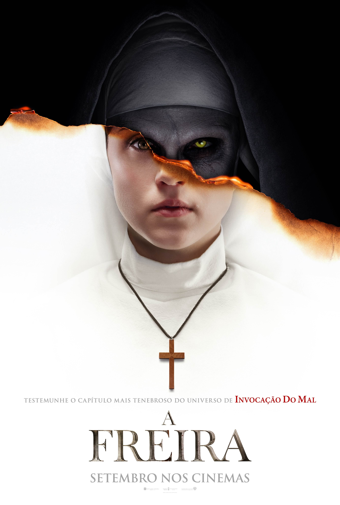
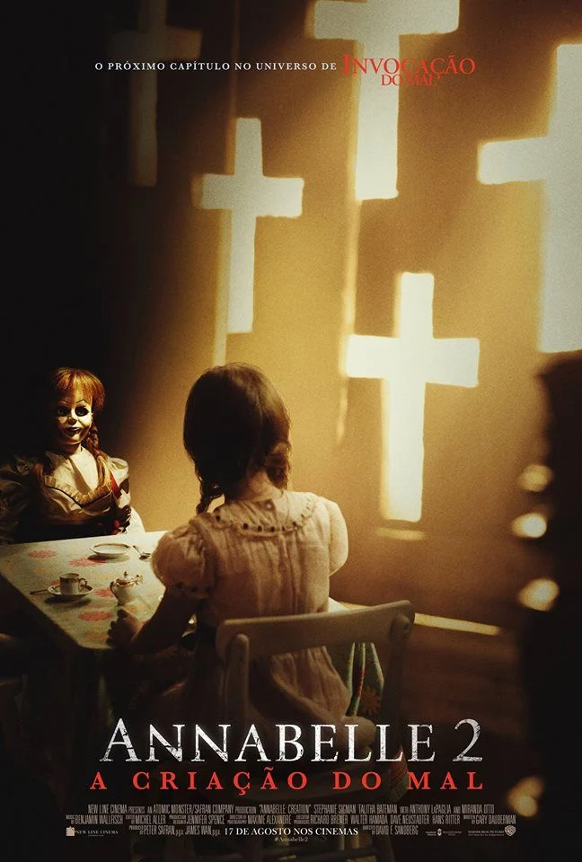
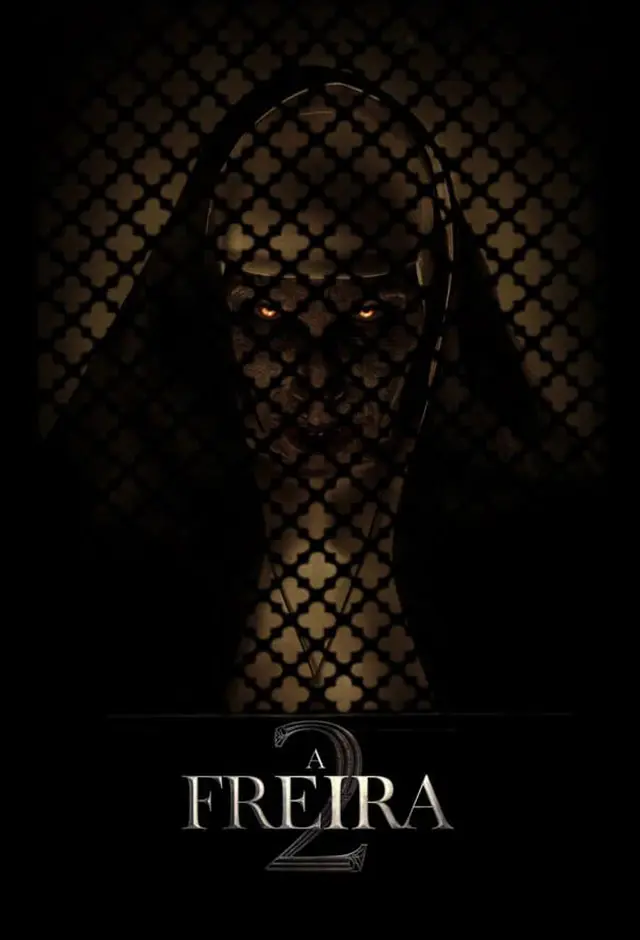
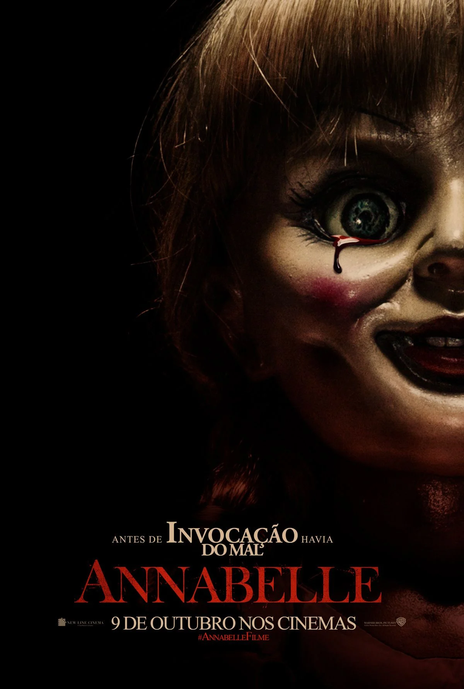
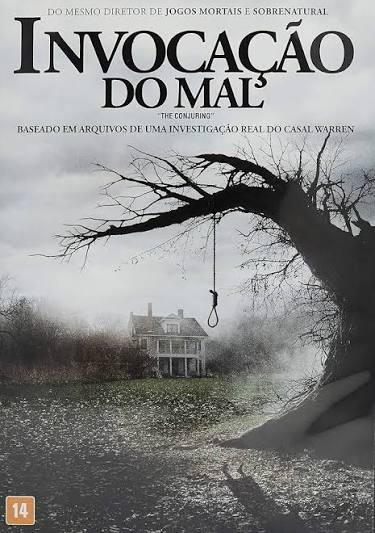
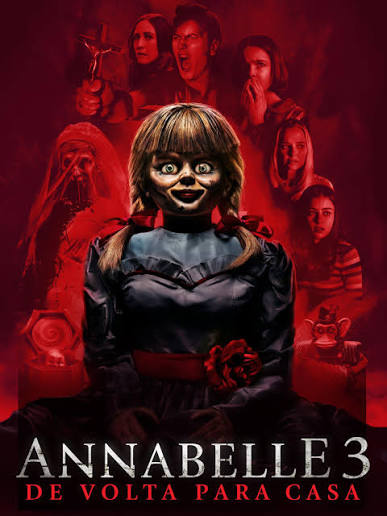
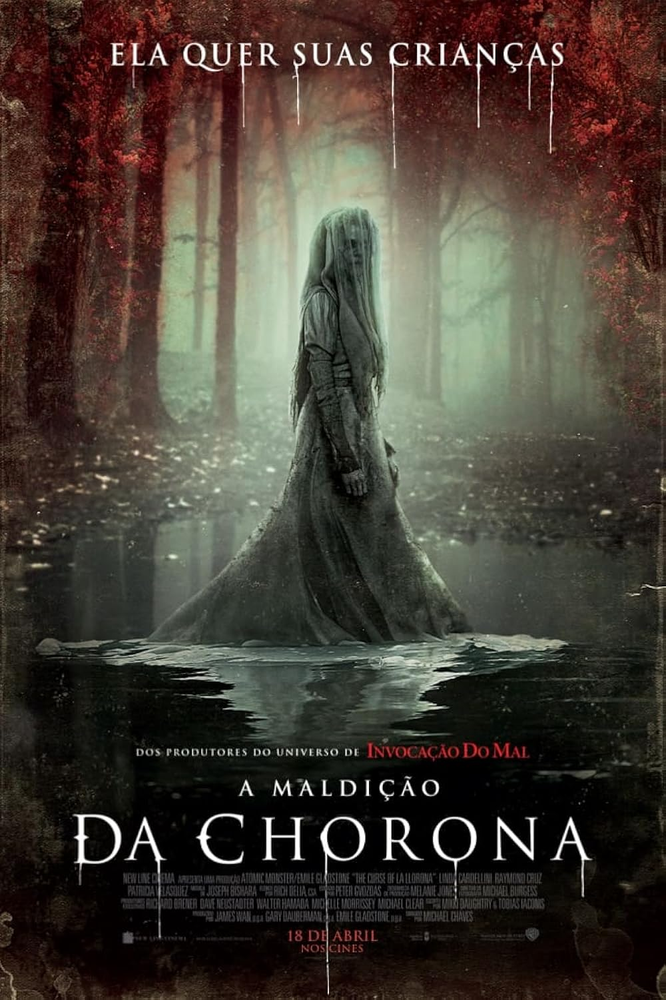
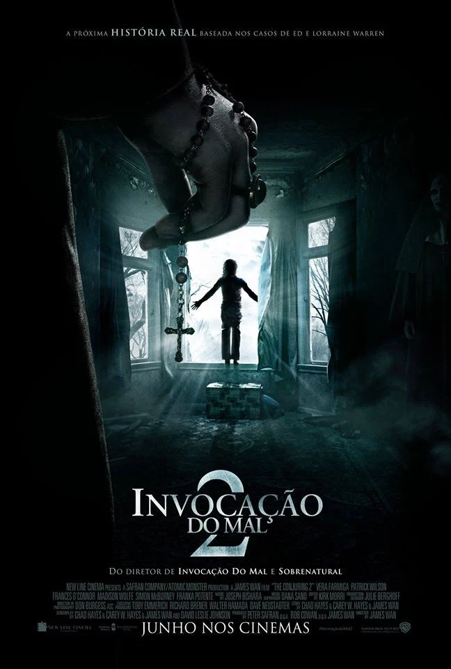
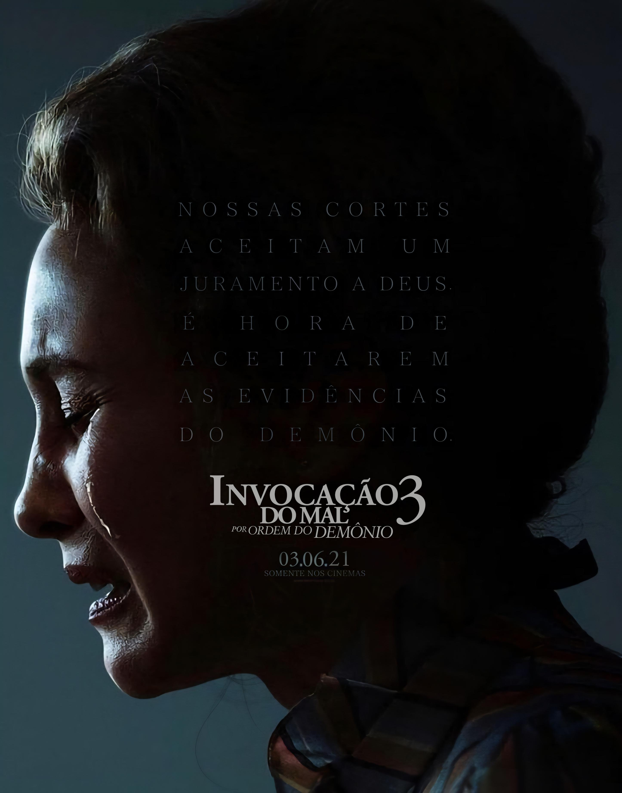
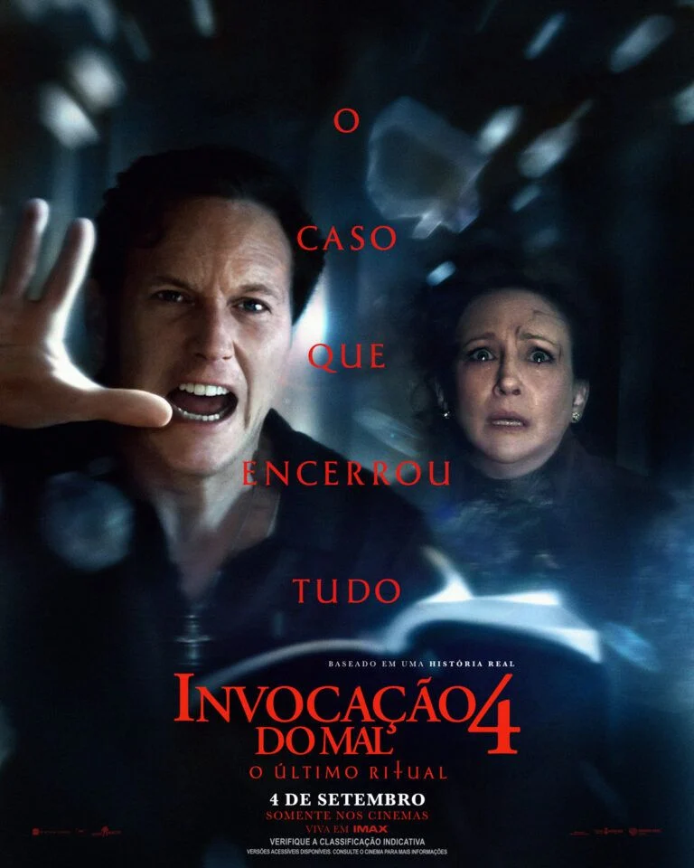

"Em 2027" Invocação do Mal 5
Invocação do Mal 5, O quinto filme da franquia principal está confirmado e será um prelúdio chamado Invocação do Mal: A Primeira Comunhão. A Warner Bros. agendou a estreia do longa-metragem nos cinemas dos Estados Unidos para o dia 10 de setembro de 2027. O lançamento nos cinemas do Brasil deve acompanhar a mesma semana.
Saiba mais...
O que já sabemos sobre o filme:
A História: O roteiro deixará de lado o formato de sequência direta após o encerramento da saga original no quarto filme. A nova trama voltará no tempo, mais especificamente para a década de 1940, com foco nos primeiros casos paranormais e na juventude do casal de investigadores.
Novo Elenco:
Como retrata o passado dos protagonistas, os atores originais Patrick Wilson e Vera Farmiga passam o bastão. O jovem Ed Warren será interpretado por Garrett Wareing (A Longa Marcha) e a jovem Lorraine Warren será vivida por Amanda Fix (Acampamento Miasma). O ator alemão Matthias Schweighöfer (Army of the Dead) também integra o elenco em papel secreto.
Direção e Roteiro:
A direção fica sob a responsabilidade do cineasta francês Rodrigue Huart. O roteiro foi assinado por Richard Naing e Ian Goldberg, veteranos que trabalharam em A Freira 2 e Invocação do Mal 4.
Franquia - Ordem cronológica









Entre em contato
Tem uma sugestão de filme? Envie para nós.